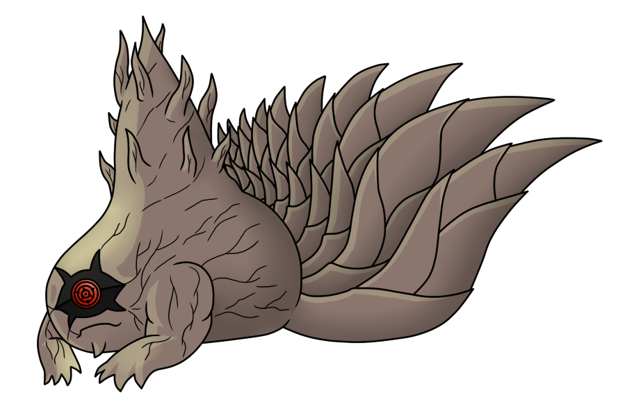
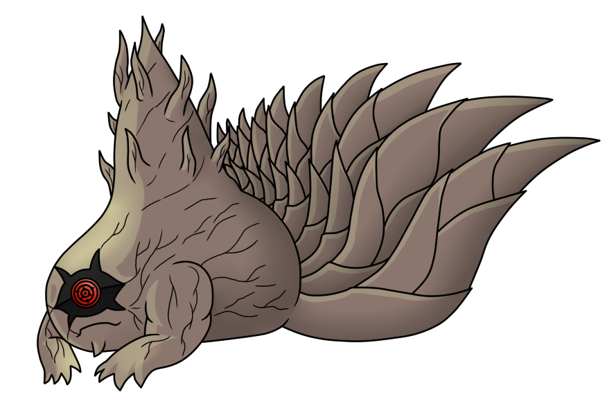

Shukaku
Shukaku (守鶴, Shukaku), mais comumente conhecido como Ichibi (一尾, Uma cauda), é um Bijū que foi o último selado dentro de Gaara de Sunagakure. Tem sido capturado por Deidara, em seguida, foi extraído e selado pela Akatsuki. Mais tarde Naruto transferiu o Shukaku para Sabaku No Toby, pois lembrou a Gaara.
Matatabi
Matatabi (又旅, Matatabi), mais comumente conhecido como Nibi (ニ尾, Duas caudas), é um Bijū que foi selado dentro de Yugito Nii de Kumogakure. Ele foi capturado por Hidan e Kakuzu, então extraído e selado pela Akatsuki. Mais tarde, foi selada em Yugito reencarnada durante a Quarta Guerra Mundial Shinobi.
Isobu
Isobu (磯撫, Isobu), mais conhecida como Sanbi (三尾, Três caudas), é um Bijū que antigamente era selado em Yagura de Kirigakure. Ele foi capturado por Deidara e Tobi, então selado pela Akatsuki. Mais tarde, foi selado em um Yagura reencarnado durante a Quarta Guerra Mundial Shinobi.
Son Goku
Son Gokū (孫悟空, Son Gokū, mais comumente conhecido como Yonbi (四尾, Quatro caudas), é um Bijū selado dentro de Rōshi de Iwagakure. Foi capturado por Kisame Hoshigaki, depois extraído e selado pela Akatsuki. Son Gokū mais tarde foi selado em Rōshi reencarnado durante a Quarta Guerra Mundial Shinobi.
Kokuō
Kokuō (穆王, Kokuō), mais comumente conhecido como Gobi (五尾, Cinco caudas), é um Bijū selado dentro de Han de Iwagakure. Ele foi capturado, extraído e selado pela Akatsuki. No anime, Kokuō é indicado ter sido um dos dois Bijū que a Akatsuki capturou antes do início de Naruto Shippūden. Mais tarde, foi selado em Han reencarnado durante a Quarta Guerra Mundial Shinobi.
Saiken
Saiken (犀犬, Saiken), mais comumente conhecido como Rokubi (六尾, Seis caudas), é um Bijū selado dentro de Utakata de Kirigakure. Ele foi capturado por Nagato no anime, então extraído e selado pela Akatsuki. Mais tarde, foi selado em Utakata reencarnado durante a Quarta Guerra Mundial Shinobi.
Chōmei
Chōmei (重明, Chōmei), mais comumente conhecido como o Nanabi (七尾, Sete caudas), é um Bijū selado dentro de Fū de Takigakure. Ele foi capturado, extraído e selado pela Akatsuki. No anime, Chōmei é indicado ter sido um dos dois Bijū que a Akatsuki capturou antes do início de Naruto Shippūden. Mais tarde, foi selada em Fū reencarnada durante a Quarta Guerra Mundial Shinobi.
Gyūki
Gyūki (牛鬼, Gyūki), mais comumente conhecido como Hachibi (八尾, Oito caudas), é um Bijū selado dentro de Killer B de Kumogakure após o Primo de A, tio de seu primo e pai do primo falharam antes dele.
Kurama
Kurama (九喇嘛, Kurama), mais comumente conhecido como o Kyūbi (九尾, Nove caudas), é um Bijū atualmente selado dentro de Naruto Uzumaki de Konohagakure. A raposa foi selada em Mito Uzumaki após a batalha no Vale do Fim, em seguida, em Kushina Uzumaki após a morte de Mito. Mais tarde Naruto adquiriu as duas partes de Kurama.
Juubi
Juubi, formada pela fusão das Bestas com Caudas. É a origem do chakra e representa uma ameaça devastadora.